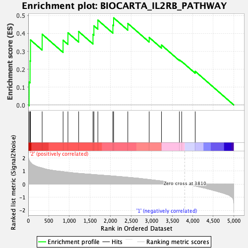
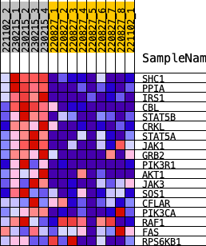
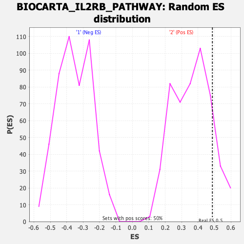

| | | Dataset | norm_counts_forGSEA.Phenotype.cls#2_versus_1.Phenotype.cls#2_versus_1_repos |
| Phenotype | Phenotype.cls#2_versus_1_repos |
| Upregulated in class | 2 |
| GeneSet | BIOCARTA_IL2RB_PATHWAY |
| Enrichment Score (ES) | 0.48761684 |
| Normalized Enrichment Score (NES) | 1.3371892 |
| Nominal p-value | 0.142 |
| FDR q-value | 0.72920847 |
| FWER p-Value | 0.749 |
Table: GSEA Results Summary

Fig 1: Enrichment plot: BIOCARTA_IL2RB_PATHWAY
Profile of the Running ES Score & Positions of GeneSet Members on the Rank Ordered List
| SYMBOL | RANK IN GENE LIST | RANK METRIC SCORE | RUNNING ES | CORE ENRICHMENT | | 1 | SHC1 | 21 | 1.846 | 0.1280 | Yes |
| 2 | PPIA | 44 | 1.713 | 0.2464 | Yes |
| 3 | IRS1 | 54 | 1.664 | 0.3638 | Yes |
| 4 | CBL | 338 | 1.240 | 0.3958 | Yes |
| 5 | STAT5B | 847 | 0.955 | 0.3623 | Yes |
| 6 | CRKL | 965 | 0.908 | 0.4039 | Yes |
| 7 | STAT5A | 1226 | 0.826 | 0.4109 | Yes |
| 8 | JAK1 | 1575 | 0.743 | 0.3943 | Yes |
| 9 | GRB2 | 1597 | 0.737 | 0.4429 | Yes |
| 10 | PIK3R1 | 1693 | 0.713 | 0.4749 | Yes |
| 11 | AKT1 | 2059 | 0.624 | 0.4463 | Yes |
| 12 | JAK3 | 2076 | 0.621 | 0.4876 | Yes |
| 13 | SOS1 | 2422 | 0.528 | 0.4562 | No |
| 14 | CFLAR | 2942 | 0.358 | 0.3777 | No |
| 15 | PIK3CA | 3241 | 0.243 | 0.3353 | No |
| 16 | RAF1 | 3677 | 0.054 | 0.2519 | No |
| 17 | FAS | 3732 | 0.032 | 0.2434 | No |
| 18 | RPS6KB1 | 4061 | -0.150 | 0.1883 | No |
Table: GSEA details [plain text format]

Fig 2: BIOCARTA_IL2RB_PATHWAY
Blue-Pink O' Gram in the Space of the Analyzed GeneSet

Fig 3: BIOCARTA_IL2RB_PATHWAY: Random ES distribution
Gene set null distribution of ES for BIOCARTA_IL2RB_PATHWAY